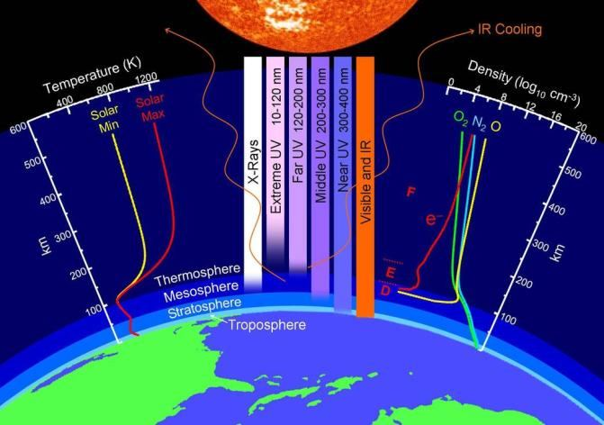
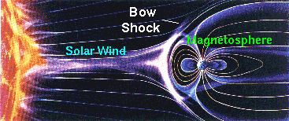

FIGURE 21.13: Green House Effect 3. The Earth is protected from solar wind by its magnetic field, which deflects most of the charged particles.

চিত্র 21_13 / Figure 21_13
চিত্র 21.13: গ্রীন হাউস ইফেক্ট 3. পৃথিবী তার চৌম্বক ক্ষেত্র দ্বারা সৌর বায়ু থেকে সুরক্ষিত, যা বেশিরভাগ চার্জযুক্ত কণাকে বিচ্যুত করে।
চিত্র 21_13 / Figure 21_13
FIGURE 21.14: Earth‘s Magnetic Field

চিত্র 21_14 / Figure 21_14
চিত্র 21.14: পৃথিবীর চৌম্বক ক্ষেত্র
চিত্র 21_14 / Figure 21_14
Thus, the sky has been made a protective canopy.
এভাবে আকাশকে করা হয়েছে প্রতিরক্ষামূলক ছাউনি।
It is He Who created the night and the day, and the sun and the moon, each in a 'sphere of space' (galaxy) they are floating (in space).
তিনিই রাত্রি ও দিন এবং সূর্য ও চন্দ্র সৃষ্টি করেছেন, প্রত্যেকেই একটি 'স্পেয়ার অফ স্ফেয়ার' (গ্যালাক্সি) এ ভেসে বেড়াচ্ছে (মহাকাশে)।
With its protective layered atmosphere, the Earth rotates on its axis at a speed of about 1,670 km/hour at the Equator, creating day and night. The Earth orbits the Sun at a speed of 30 km/second. The Sun, along with its solar system, moves around the center of the Milky Way galaxy at 200 km/second. Additionally, the galaxy is moving toward the Great Attractor at a rate of 200 km/hour in dynamic space. Yet, days and nights come with perfect precision. Who maintains this system with such exact timing? Section-7 of Chapter 21 [Verse 34-50]: When the Promise will come to Pass?
এর প্রতিরক্ষামূলক স্তরযুক্ত বায়ুমণ্ডল সহ, পৃথিবী তার অক্ষের উপর নিরক্ষরেখায় প্রায় 1,670 কিমি/ঘন্টা বেগে ঘোরে, দিন এবং রাত তৈরি করে। পৃথিবী সূর্যকে প্রদক্ষিণ করে 30 কিমি/সেকেন্ড বেগে। সূর্য, তার সৌরজগতের সাথে, 200 কিমি/সেকেন্ডে মিল্কিওয়ে গ্যালাক্সির কেন্দ্রের চারপাশে ঘুরে। অতিরিক্তভাবে, গ্যালাক্সিটি গতিশীল মহাকাশে 200 কিমি/ঘন্টা গতিতে গ্রেট অ্যাট্রাক্টরের দিকে অগ্রসর হচ্ছে। তবুও, দিন এবং রাত নিখুঁত নির্ভুলতার সাথে আসে। কে এই ধরনের সঠিক সময় সঙ্গে এই সিস্টেম বজায় রাখা? অধ্যায় 21 [পদ 34-50] এর ধারা-7: প্রতিশ্রুতি কখন পূরণ হবে?
We granted not to any man before you permanent life; if then you should die, would they live permanently? Every soul shall have a taste of death, and We test you by evil and by good by way of trial, and to Us you will be returned. When the Unbelievers see you, they treat you not except with ridicule: "Is this the one who talks of your gods?" And they blaspheme at the mention of Most Gracious! Man is a creature of haste; soon will I show you My Signs; then you will not ask Me to hasten them! They say: "When will this promise come to pass, if you are telling the truth?" If only the Unbelievers knew, when they will not be able to ward off the fire from their faces, nor yet from their backs, and no help can reach them; nay, it may come to them all of a sudden and confound them; no power they will have then to avert it, nor will they get respite. Mocked were apostles before you, but their scoffers were hemmed in by the thing that they mocked. Say: "Who can keep you safe by night and by day from Most Gracious?" Yet they turn away from the mention of their Lord. Or have they gods that can guard them from Us? They have no power to aid themselves, nor can they be defended from Us. Nay, We gave the good things of this life to these men and their fathers until the period grew long for them. Then see they not that We come to the land? We reduce it from its boundary. So, is they overcoming? Remarks:
তোমার পূর্বে আমরা কাউকে স্থায়ী জীবন দান করিনি। যদি তোমার মৃত্যু হয়, তবে তারা কি চিরকাল বেঁচে থাকবে? প্রত্যেক প্রাণীকেই মৃত্যুর স্বাদ গ্রহণ করতে হবে এবং আমি তোমাদেরকে মন্দ ও ভালো দ্বারা পরীক্ষা করব এবং আমাদের কাছেই তোমরা প্রত্যাবর্তিত হবে। কাফেররা যখন তোমাকে দেখে, তখন তারা তোমার সাথে উপহাস ছাড়া ব্যবহার করে না: "এই কি সেই ব্যক্তি যে তোমার উপাস্যের কথা বলে?" এবং তারা পরম করুণাময়ের উল্লেখে গালি দেয়! মানুষ তাড়াহুড়ার প্রাণী; শীঘ্রই আমি তোমাদেরকে আমার নিদর্শন দেখাব। তাহলে আপনি আমাকে তাড়াহুড়া করতে বলবেন না! তারা বলেঃ এই ওয়াদা কবে পূর্ণ হবে, যদি তুমি সত্য বল? যদি কাফেররা জানত, যখন তারা তাদের মুখমন্ডল থেকে আগুন নিভিয়ে দিতে পারবে না, না তাদের পিঠ থেকে, এবং তাদের কাছে কোন সাহায্য পৌঁছাতে পারবে না। বরং এটা তাদের কাছে হঠাৎ এসে বিভ্রান্ত করতে পারে। তখন তা ঠেকানোর কোনো শক্তি তাদের থাকবে না এবং তারা অবকাশও পাবে না। তোমাদের পূর্বে প্রেরিতদের উপহাস করা হয়েছিল, কিন্তু তাদের উপহাসকারীরা যে বিষয় নিয়ে ঠাট্টা করত তাতেই তারা বিদ্রুপ করেছিল। বলুন, কে আপনাকে পরম করুণাময় থেকে রাতে ও দিনে নিরাপদ রাখতে পারে? অথচ তারা তাদের পালনকর্তার জিকির থেকে মুখ ফিরিয়ে নেয়। অথবা তাদের কি উপাস্য আছে যারা তাদেরকে আমাদের থেকে রক্ষা করতে পারে? তাদের নিজেদের সাহায্য করার কোন ক্ষমতা নেই এবং আমাদের থেকে তাদের রক্ষা করা যাবে না। বরং, আমরা এই লোকদের এবং তাদের পিতাদেরকে পার্থিব জীবনের উত্তম জিনিস দিয়েছিলাম যতক্ষণ না তাদের সময়কাল দীর্ঘ হয়। অতঃপর তারা কি দেখে না যে আমরা দেশে আসি? আমরা এটির সীমানা থেকে কমিয়ে দিই। তাই, তারা কি কাটিয়ে উঠছে? মন্তব্য:
When will the promise come to pass? The verses above do not directly answer this question but offer a clue in the last paragraph to help understand the plausible time: "… Then see they not that We come to the land? We reduce it from its boundary. So, is they overcoming?" In this verse, 'the land' refers to the 'future Land of Final Judgment'. The verse implies that Allah in forms, His Arsh, Kursi, Araf, and Jannaat, is approaching the future Land of Judgment by contracting the universe from the outermost boundary (Seventh Sky). The verse indicates that the universe (Samawaat) is closing by rolling up from the Seventh Sky. Finally, all the objects of the universe will be rolled up like a scroll for writing. Allah created the universe from forces provided from His nafs. When matter is annihilated due to extreme contraction, the universe will reach a state known as the Big Crunch—the Big Crunch is the Singularity at the end of the universe. From the Big Crunch, the reprogrammed universe will revive to the state of Thaqal (Heavy Mass) when the resurrection of the dead will occur. The resurrected creatures and the matter of the Solar System will be ejected from the Thaqal to form the Land of Judgment. It will be a flat plain object in the Super Space. Therefore, the verse means that 'Allah in form' and the establishments of the Judgment, such as the Arsh, the Kursi, the Araf, and the Jannaat are coming down toward the point of future Land of Judgment by reducing the universe from the Seventh Sky. On the Day of Judgment, the creations will be marshaled before the Lord of the universes. But when the Day of Judgment will come? The answer is beyond our understanding. Can we even grasp the span of a billion years? Moreover, as the universe transitions from this cycle to the next, there will be reprogramming and transformation. In that moment, a mere flick of an eye could encompass the weight of a billion years.
প্রতিশ্রুতি কবে পূরণ হবে? উপরের আয়াতগুলি এই প্রশ্নের সরাসরি উত্তর দেয় না কিন্তু শেষ অনুচ্ছেদে একটি সংকেত দেয় যাতে যুক্তিসঙ্গত সময় বোঝা যায়: "...তাহলে তারা দেখে না যে আমরা ভূমিতে এসেছি? আমরা এটিকে এর সীমানা থেকে কমিয়ে দিয়েছি। তাহলে, তারা কি কাটিয়ে উঠছে?" এই আয়াতে 'ভূমি' বলতে 'চূড়ান্ত বিচারের ভবিষ্যৎ ভূমি' বোঝানো হয়েছে। আয়াতটি ইঙ্গিত করে যে আল্লাহ তার আরশ, কুরসি, আরাফ এবং জান্নাত রূপে, মহাবিশ্বকে বাইরের সীমানা (সপ্তম আকাশ) থেকে সংকুচিত করে ভবিষ্যত বিচারভূমির কাছে আসছেন। আয়াতটি নির্দেশ করে যে মহাবিশ্ব (সামাওয়াত) সপ্তম আকাশ থেকে গড়িয়ে পড়ার মাধ্যমে বন্ধ হয়ে যাচ্ছে। অবশেষে, মহাবিশ্বের সমস্ত বস্তু লেখার জন্য একটি স্ক্রলের মতো গুটিয়ে নেওয়া হবে। আল্লাহ মহাবিশ্ব সৃষ্টি করেছেন তাঁর নফস থেকে প্রদত্ত শক্তি থেকে। যখন বস্তুটি চরম সংকোচনের কারণে ধ্বংস হয়ে যায়, তখন মহাবিশ্ব বিগ ক্রাঞ্চ নামে পরিচিত একটি অবস্থায় পৌঁছাবে—বিগ ক্রাঞ্চ হল মহাবিশ্বের শেষ প্রান্তে এককতা। বিগ ক্রাঞ্চ থেকে, পুনরায় প্রোগ্রাম করা মহাবিশ্ব থাকাল (ভারী ভর) অবস্থায় পুনরুজ্জীবিত হবে যখন মৃতদের পুনরুত্থান ঘটবে। পুনরুত্থিত প্রাণী এবং সৌরজগতের বিষয়টি বিচারের ভূমি গঠনের জন্য থাকাল থেকে বের হয়ে যাবে। এটি সুপার স্পেসের একটি সমতল সমতল বস্তু হবে। অতএব, আয়াতের অর্থ হল 'আল্লাহর রূপে' এবং বিচারের স্থাপনাসমূহ, যেমন আরশ, কুরসি, আরাফ এবং জান্নাত মহাবিশ্বকে সপ্তম আকাশ থেকে হ্রাস করে ভবিষ্যত বিচারভূমির বিন্দুর দিকে নেমে আসছে। বিচার দিবসে সৃষ্টিজগতের পালনকর্তার সামনে মার্শাল করা হবে। কিন্তু কেয়ামত কবে আসবে? উত্তরটা আমাদের বোধগম্যতার বাইরে। আমরা কি এক বিলিয়ন বছরের ব্যবধানও ধরতে পারি? তদুপরি, মহাবিশ্ব এই চক্র থেকে পরবর্তীতে রূপান্তরিত হওয়ার সাথে সাথে পুনরায় প্রোগ্রামিং এবং রূপান্তর হবে। সেই মুহূর্তে, চোখের একটি ঝাঁকুনি এক বিলিয়ন বছরের ওজনকে ঘিরে ফেলতে পারে।
―To God belongs the Mystery of the Skies and Lands. And the decision of the Hour is as the twinkling of an eye, or even quicker; for God has power over all things.‖ [Al Quran 16:77]
-আকাশ ও জমিনের রহস্য ঈশ্বরেরই। আর কেয়ামতের ফয়সালা চোখের পলকের মত বা তার চেয়েও দ্রুত। কারণ ঈশ্বর সব কিছুর উপর ক্ষমতাবান।” [আল কুরআন 16:77]
The next universe will allow for the scope of Judgment by forming the Thaqal and the Land of Judgment at the outset. The matter is discussed in detail in Section-7 of Chapter-30. A tiny human asking: When will the promise come to pass? The answer is: it will be on the day after his death, for he will feel as though he is resurrected the very next day.
পরবর্তী মহাবিশ্ব শুরুতেই থাকাল এবং বিচারের ভূমি গঠন করে বিচারের সুযোগের অনুমতি দেবে। অধ্যায়-30-এর ধারা-7-এ বিষয়টি বিস্তারিতভাবে আলোচনা করা হয়েছে। একজন ক্ষুদ্র মানুষ জিজ্ঞাসা করছে: প্রতিশ্রুতি কখন পূরণ হবে? উত্তরটি হল: এটি হবে তার মৃত্যুর পরের দিন, কারণ তার মনে হবে যেন তিনি পরের দিনই পুনরুত্থিত হয়েছেন।
Say: "I do but warn you according to revelation". But the deaf will not hear the call when they are warned! If but a breath of the Wrath of your Lord do touch them, they will then say, "Woe to us! We did wrong indeed!" We shall set up scales of justice for the Day of Judgment so that not a soul will be dealt with unjustly in the least, and if there be the weight of a mustard seed, We will bring it; and enough are We to take account. In the past, We granted to Moses and Aaron the Furqan and a Light, and a Message for the Guards, those who fear their Lord in their most secret thoughts and who hold the Hour in awe, and this is a blessed Message, which We have sent down; will you then reject it?
বলুনঃ আমি তো তোমাদেরকে ওহী অনুযায়ী সতর্ক করি। কিন্তু বধিররা ডাক শুনবে না যখন তাদের সতর্ক করা হয়! আপনার পালনকর্তার ক্রোধের একটি নিঃশ্বাস যদি তাদের স্পর্শ করে, তবে তারা বলবে, হায় আমাদের! আমরা তো অন্যায় করেছিলাম! আমরা বিচার দিবসের জন্য ন্যায়বিচারের দাঁড়িপাল্লা স্থাপন করব যাতে একজনের সাথে সামান্যতমও অন্যায় করা না হয় এবং যদি একটি সরিষার দানার ওজন হয় তবে আমরা তা নিয়ে আসব; এবং আমরা হিসাব গ্রহণের জন্য যথেষ্ট। অতীতে, আমরা মূসা ও হারুনকে ফুরকান এবং একটি আলো এবং রক্ষীদের জন্য একটি বার্তা দিয়েছিলাম, যারা তাদের প্রভুকে তাদের গোপন চিন্তায় ভয় করে এবং যারা কেয়ামতকে ভয় করে এবং এটি একটি বরকতময় বাণী, যা আমি নাযিল করেছি; তাহলে তুমি কি তা প্রত্যাখ্যান করবে?
[Abraham]
[ইব্রাহিম]
We bestowed aforetime on Abraham his rectitude of conduct, and well were We acquainted with him. Behold! He said to his father and his people, "What are these images, to which you are devoted?" They said, "We found our fathers worshipping them." He said, "Indeed you have been in manifest error, you and your fathers." They said, "Have you brought us the Truth, or are you one of those who jest?" He said, "Nay, your Lord is the Lord of the Skies and Lands; He Who created them, and I am a witness to this. And by God, I have a plan for your idols, after you go away and turn your backs". So, he broke them to pieces but the biggest of them that they might turn to it. They said, "Who has done this to our gods? He must indeed be some man of impiety!" They said, "We heard a youth talk of them; he is called Abraham." They said, "Then bring him before the eyes of the people that they may bear witness." They said, "Are you the one that did this with our gods, O Abraham?" He said, "Nay, this was done by this is their biggest one! Ask them, if they can speak intelligently!" So, they turned to themselves and said, "Surely you are the ones in the wrong!" Then were they confounded with shame, "You know full well that these do not speak!" Said, "Do you then worship besides God things that can neither be of any good to you, nor do you harm? Fie upon you and upon the things that you worship besides God! Have you no sense?" They said, "Burn him and protect your gods, if you do!" We said, "O Fire! Be you cool and safety for Abraham!" And they wanted to harm him, but We made them the worst losers. And We rescued him and Lot to the land, which We have blessed for the nations. And We bestowed on him, Isaac, and as an additional gift, Jacob. Each one We made righteous. And We made them leaders guiding by Our Command, and We revealed to them the doing of good deeds, and establishment of Salat, and the giving of Zakat; and of Us they were the worshippers.
আমরা ইবরাহীমকে ইতিপূর্বে তার আচার-আচরণ দান করেছিলাম এবং আমরা তার সাথে ভালভাবে পরিচিত ছিলাম। দেখো! তিনি তার পিতা ও তার সম্প্রদায়কে বললেন, এই মূর্তিগুলো কি, যার প্রতি তোমরা ভক্ত? তারা বলল, আমরা আমাদের বাপ-দাদাকে তাদের ইবাদত করতে দেখেছি। তিনি বললেন, তুমি এবং তোমার বাপ-দাদারা নিশ্চয়ই প্রকাশ্য গোমরাহীতে আছ। তারা বলল, তুমি কি আমাদের কাছে সত্য নিয়ে এসেছ, না তুমি ঠাট্টাকারীদের একজন? তিনি বললেন, "না, তোমার রব আকাশ ও জমিনের পালনকর্তা; যিনি এগুলো সৃষ্টি করেছেন, এবং আমি এর একজন সাক্ষী। এবং আল্লাহর কসম, তোমার মূর্তিগুলোর ব্যাপারে আমার একটি পরিকল্পনা আছে, তুমি চলে যাওয়ার পর এবং তোমার মুখ ফিরিয়ে নেবে"। সুতরাং, তিনি তাদের টুকরো টুকরো টুকরো টুকরো টুকরো টুকরো টুকরো টুকরো করে দিলেন কিন্তু তাদের মধ্যে সবচেয়ে বড় যাতে তারা এর দিকে ফিরে যেতে পারে। তারা বলল, "আমাদের দেবতাদের সাথে কে এমন করেছে? সে নিশ্চয়ই কোন পাপী মানুষ!" তারা বলল, আমরা তাদের সম্পর্কে এক যুবকের কথা শুনেছি, তাকে ইবরাহীম বলা হয়। তারা বলল, “তাহলে তাকে লোকদের চোখের সামনে হাজির কর যাতে তারা সাক্ষ্য দিতে পারে। তারা বলল, হে ইব্রাহীম, তুমিই কি আমাদের দেবতাদের সাথে এরূপ করেছ? তিনি বললেন, "না, এটা তাদের সবচেয়ে বড় কাজ! তাদেরকে জিজ্ঞেস করুন, তারা বুদ্ধিমানের সাথে কথা বলতে পারে কি না!" অতঃপর তারা নিজেদের দিকে ফিরে বলল, "নিশ্চয়ই তুমিই ভুলের মধ্যে রয়েছে!" তখন তারা লজ্জায় বিহ্বল হয়ে পড়েছিল, "তোমরা ভালো করেই জানো যে এরা কথা বলে না!" বললেন, "তাহলে কি তোমরা আল্লাহকে বাদ দিয়ে এমন কিছুর ইবাদত কর যা তোমাদের কোন উপকারও করতে পারে না, ক্ষতিও করতে পারে না? তোমাদের উপর এবং তোমরা আল্লাহকে বাদ দিয়ে যাদের উপাসনা করছ তাদের উপর! তোমাদের কি কোন জ্ঞান নেই?" তারা বলল, "তাকে পুড়িয়ে ফেল এবং তোমার দেবতাদের রক্ষা কর, যদি তুমি কর! আমরা বললাম, হে আগুন! তুমি ইব্রাহীমের জন্য শীতল ও নিরাপদ হও। এবং তারা তার ক্ষতি করতে চেয়েছিল, কিন্তু আমি তাদেরকে সবচেয়ে বেশি ক্ষতিগ্রস্ত করেছিলাম। এবং আমরা তাকে এবং লূতকে সেই দেশে উদ্ধার করেছিলাম, যা আমরা জাতিদের জন্য আশীর্বাদ করেছি। এবং আমরা তাকে দান করেছি, ইসহাক, এবং অতিরিক্ত উপহার হিসাবে, ইয়াকুব। প্রত্যেককেই আমি সৎকর্মশীল করেছিলাম। আর আমি তাদেরকে আমাদের হুকুম অনুযায়ী পথপ্রদর্শক করেছিলাম এবং তাদের প্রতি সৎকাজ, সালাত কায়েম ও যাকাত প্রদানের নির্দেশ দিয়েছিলাম। আর তারা আমাদেরই উপাসক ছিল।
Abraham discovered the concept of worshipping one God, rejecting idolatry. God was pleased with him and increased his knowledge. In fact, the religion of Noah was revived through him, and the same faith was later preached by his descendants, mentioned below.
আব্রাহাম মূর্তিপূজা প্রত্যাখ্যান করে এক ঈশ্বরের উপাসনার ধারণা আবিষ্কার করেছিলেন। ঈশ্বর তার প্রতি সন্তুষ্ট হলেন এবং তার জ্ঞান বৃদ্ধি করলেন। প্রকৃতপক্ষে, নূহের ধর্ম তাঁর মাধ্যমে পুনরুজ্জীবিত হয়েছিল এবং একই বিশ্বাস পরবর্তীতে তাঁর বংশধরদের দ্বারা প্রচারিত হয়েছিল, যা নীচে উল্লেখ করা হয়েছে।
[Lot]
[অনেক]
And to Lot too We gave Judgment and Knowledge, and We saved him from the town which practised abominations. Truly, they were a people given to evil, a rebellious people. And We admitted him to Our mercy, for he was one of the Righteous.
এবং লূতকেও আমি বিচার ও জ্ঞান দিয়েছিলাম এবং তাকে সেই জনপদ থেকে রক্ষা করেছি যেটি জঘন্য কাজ করত। প্রকৃতপক্ষে, তারা ছিল মন্দ লোক, বিদ্রোহী সম্প্রদায়। আর আমি তাকে আমার রহমতের মধ্যে দাখিল করেছিলাম, কারণ সে ছিল সৎকর্মশীলদের একজন।
[Noah]
[নূহ]
Noah, when he cried aforetime, We listened to his (prayer) and saved him and his family from great distress. We helped him against people who rejected Our signs. Truly, they were a people given to evil. So, We drowned them all together.
নূহ (আঃ) পূর্বে যখন তিনি কান্নাকাটি করেছিলেন, তখন আমরা তার (প্রার্থনা) শুনলাম এবং তাকে এবং তার পরিবারবর্গকে মহা বিপদ থেকে রক্ষা করলাম। যারা আমার নিদর্শনাবলীকে অস্বীকার করেছিল তাদের বিরুদ্ধে আমরা তাকে সাহায্য করেছি। প্রকৃতপক্ষে তারা ছিল মন্দ লোক। সুতরাং, আমরা তাদের সবাইকে একসাথে ডুবিয়ে দিলাম।
[David and Solomon]
[ডেভিড এবং সলোমন]
And remember David and Solomon when they gave judgment in the matter of the field into which the sheep of certain people had strayed by night. We did witness their judgment. To Solomon, We inspired the understanding of the matter. To each We gave Judgment and Knowledge. It was Our power that made the hills and the birds celebrate Our praises with David; it was We Who did. It was We Who taught him the making of coats of mail for your benefit, to guard you from each other's violence. Will you then be grateful? The violent wind flow for Solomon to his order to the land which We had blessed; for We do know all things. And of the satans (evil jinns) were some who dived for him and did other work besides, and it was We Who guarded them.
আর দায়ূদ ও সোলায়মানকে স্মরণ করুন যখন তারা সেই মাঠের বিষয়ে রায় দিয়েছিলেন যেটিতে কিছু লোকের মেষরা রাতে পথভ্রষ্ট হয়েছিল। আমরা তাদের রায় প্রত্যক্ষ করেছি। সোলায়মানের কাছে, আমরা বিষয়টি বোঝার জন্য অনুপ্রাণিত করেছি। প্রত্যেককে আমি বিচার ও জ্ঞান দান করেছি। এটা আমাদের শক্তি ছিল যে পাহাড় এবং পাখি ডেভিড সঙ্গে আমাদের প্রশংসা উদযাপন করা; এটা আমরা যারা করেছি. আমরাই তাকে শিখিয়েছিলাম, তোমাদের উপকারের জন্য, তোমাদের একে অপরের হিংস্রতা থেকে রক্ষা করার জন্য। তাহলে কি তোমরা কৃতজ্ঞ হবে? সলোমনের জন্য হিংস্র বাতাস প্রবাহিত হয়েছিল তার আদেশে সেই দেশে যা আমরা আশীর্বাদ করেছি; কারণ আমরা সবই জানি। আর শয়তানদের মধ্যে কিছু লোক ছিল যারা তার জন্য ডুব দিত এবং এ ছাড়া অন্য কাজ করত এবং আমিই তাদের হেফাজত করতাম।
[Job]
[চাকরি]
And Job, when he cried to his Lord: "Truly distress has seized me, but You are the Most Merciful of those that are merciful." So, We listened to him. We removed the distress that was on him, and We restored his people to him and doubled their number as a grace from Ourselves, and a thing for commemoration for all who serve Us.
এবং আইয়ুব, যখন সে তার পালনকর্তাকে ডাকল: "নিশ্চয়ই আমাকে দুঃখকষ্ট গ্রাস করেছে, কিন্তু আপনি দয়ালুদের মধ্যে সবচেয়ে দয়ালু।" সুতরাং, আমরা তার কথা শুনলাম। আমরা তার উপর যে দুর্দশা ছিল তা দূর করে দিয়েছি, এবং আমরা তার লোকদের তার কাছে ফিরিয়ে দিয়েছি এবং তাদের সংখ্যা দ্বিগুণ করে দিয়েছি আমাদের পক্ষ থেকে অনুগ্রহ হিসেবে, এবং যারা আমাদের সেবা করে তাদের জন্য স্মরণীয় বিষয়।
[Ismail, Idris, Zul-kifl]
[ইসমাইল, ইদ্রিস, যুল-কিফল]